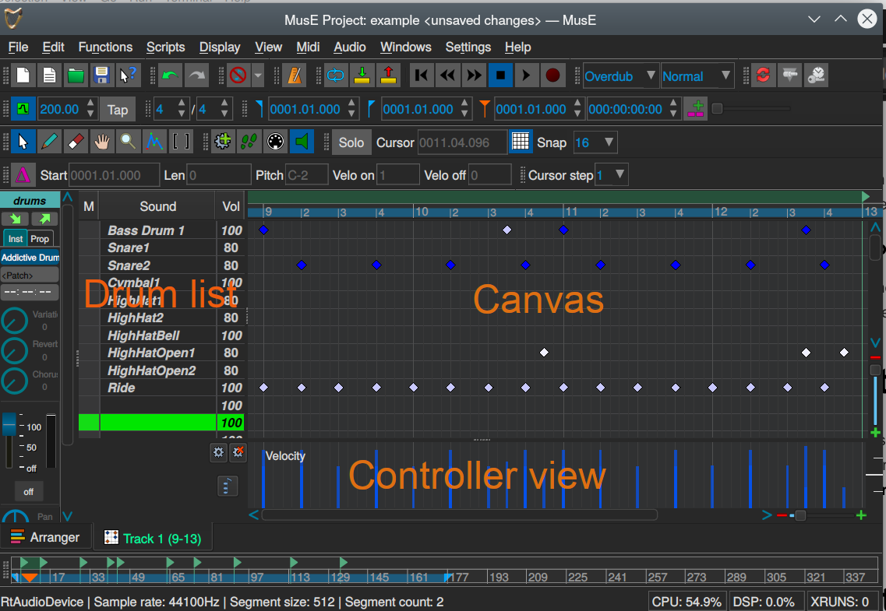

Drum editor
The drum editor in MusE follows the matrix editor design which is very common in MIDI editors and as the pianoroll consist of three different parts. For the drum editor they are: Drum list, Canvas and Controller view.

Controller view
This one works exactly the same as with the Piano Roll so refer to that chapter.
Drum Canvas
The Drum Canvas works in a similar way as the Piano Roll Canvas but not completely. For starters, all notes in the Drum Canvas look like tiny (usually blue) diamonds and they are nearly always placed exactly on the vertical lines. As in the Piano Roll they are placed on the horizontal lines, but the horizontal lines do not represent piano keys but instead a unique drum sound as defined in the Drum list.
Drum List
Cursor Mode
Pianoroll toolbar
Works the same as in the Piano Roll, see this chapter.